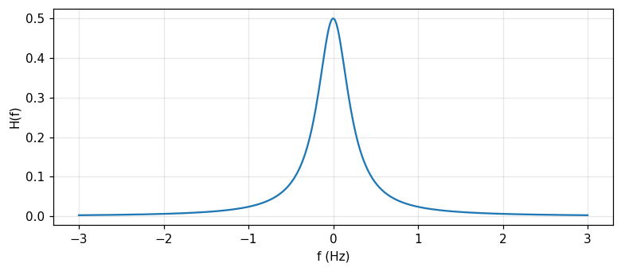
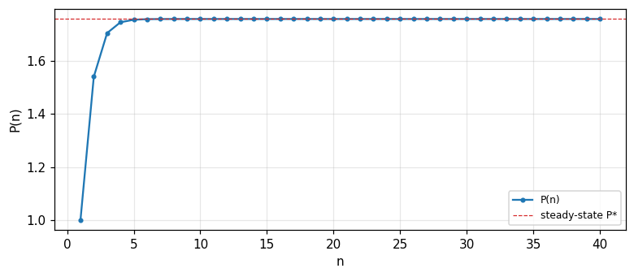

The orthogonality principle and linear transformations, unrealizable and realizable Wiener filters (spectral factorization), the discrete Wiener filter and the normal equations, the Kalman filter via the concept of innovations (Barkat, chapter 7).
State and prove the orthogonality principle, and use it to derive the simplest linear minimum-mean-square estimate.
Derive the unrealizable Wiener filter H(f)=S_{sy}(f)/S_{yy}(f) and compute the corresponding minimum mean-square error.
Solve the Wiener–Hopf equation for a realizable filter by spectral factorization, splitting S_{yy}(f) into causal and anticausal factors.
Build the discrete Wiener filter from the normal equations R_{YY}\omega=R_{Ys}, recognising it as the least-squares idea of module 22 applied to a filter.
Derive the scalar Kalman filter via the concept of innovations, compute the Kalman gain k(n), and relate the Kalman filter to the Wiener filter for a stationary process.
Use the buttons, the dots or the ← → keys to move between slides.
PART 1/5
01
Linear transformations and the orthogonality principle
Situation: Filtering: extracting the signal S(t) from the noisy observation Y(t)=S(t)+N(t) using a linear transformation \hat Y(t)=L[Y(t)] minimising the mean-square error.
Complication: The orthogonality principle: L[\cdot] minimises the mean-square error if and only if the error \varepsilon(t) is orthogonal to all the observed data.
Resolution: Example 7.1: the simplest estimate \hat S(t)=aY(t) illustrates the whole machinery — the coefficient a and the minimum error depend only on the correlation functions at zero lag.
Filtering, prediction, smoothing
The orthogonality-principle theorem
Example 7.1: the simplest estimate
1/5 · Linear transformations and the orthogonality principle
Three problems in one framework: filtering, prediction, smoothing
In chapter 6, we estimated constant or random parameters. In many applications, the goal is actually to estimate an entire signal waveform from a noisy version of it, optimally. The observation Y(t) is taken over t\in[t_i,t_f]; if t<t_i the problem is backward prediction, if t>t_f it is forward prediction, and if t\in[t_i,t_f] it is smoothing. The process of extracting the information-carrying signal S(t) from Y(t)=S(t)+N(t) is called filtering (Barkat, pp. 399 to 400).
1/5 · Linear transformations and the orthogonality principle
Linear transformations: definition and properties
The estimate sought is a linear transformation of the observed data, \hat Y(t)=L[Y(t)], minimising the mean-square error E[\varepsilon^2(t)]=E[(Y(t)-\hat Y(t))^2]. A transformation L[\cdot] is linear if L[a_1Y_1(t)+a_2Y_2(t)]=a_1L[Y_1(t)]+a_2L[Y_2(t)]; the difference of two linear transformations is also linear, and for a linear transformation, expectation and the transformation commute: E\{L[\cdot]\}=L\{E[\cdot]\} (Barkat, pp. 400 to 401).
1/5 · Linear transformations and the orthogonality principle
The orthogonality-principle theorem
A linear transformation L[\cdot] is the minimum mean-square estimate if and only if the error \varepsilon(t) is orthogonal to the data Y(\xi) for every \xi\in[t_i,t_f]: E[\varepsilon(t)Y(\xi)]=0. The proof compares an arbitrary estimate L_1 with an estimate L_2 whose error is orthogonal to the data; the difference L=L_2-L_1 is also linear, and expanding the square gives e_m=E[\varepsilon_2^2(t)]+E\{[L(Y(\xi))]^2\}\ge E[\varepsilon_2^2(t)], with equality if and only if L=0 — i.e. L_1=L_2 (Barkat, pp. 401 to 403).
1/5 · Linear transformations and the orthogonality principle
The minimum error, simplified using orthogonality
Using the orthogonality principle itself, E[\{S(t)-\hat S(t)\}Y(\xi)]=0; multiplying both sides by \hat S(t)=L[Y(\xi)] (itself a linear combination of Y(\xi)) and subtracting, the minimum mean-square error reduces to e_m=E[\{S(t)-\hat S(t)\}S(t)] — no need to know \hat S(t) explicitly, only the correlation functions (Barkat, p. 403).
1/5 · Linear transformations and the orthogonality principle
Example 7.1: the simplest estimate \hat S(t)=aY(t)
With Y(t)=S(t)+N(t), S,N wide-sense stationary zero-mean, find the constant a making \hat S(t)=aY(t) optimal. The orthogonality principle gives E\{[S(t)-aY(t)]Y(t)\}=R_{sy}(0)-aR_{yy}(0)=0, i.e. a=R_{sy}(0)/R_{yy}(0). The minimum error is e_m=R_{ss}(0)-aR_{sy}(0)=R_{ss}(0)-R_{sy}^2(0)/R_{yy}(0) (Barkat, pp. 403 to 405). If S,N are independent, R_{sy}(0)=R_{ss}(0) and R_{yy}(0)=R_{ss}(0)+R_{nn}(0), giving a=R_{ss}(0)/[R_{ss}(0)+R_{nn}(0)] and e_m=R_{ss}(0)R_{nn}(0)/[R_{ss}(0)+R_{nn}(0)].
1/5 · Linear transformations and the orthogonality principle
Measured: a, e_m, and orthogonality confirmed numerically
Measured: with R_{ss}(0)=4, R_{nn}(0)=1 (independent), the coefficient a = 0.8, the minimum error e_m = 0.8. A Monte Carlo simulation with independent Gaussian S,N of the corresponding variances: the measured value of E[(S-aY)Y] at exactly this a is -4.08e-03 (near zero), directly confirming the orthogonality condition used to derive a.
1/5 · Linear transformations and the orthogonality principle
Self-check, part 1
When t lies outside the observation interval [t_i,t_f] and t>t_f, what is the problem called?
What condition does the orthogonality principle state for the optimal estimate?
In Example 7.1, the optimal coefficient a equals the ratio of what quantities?
Hints: forward prediction; the error is orthogonal to all the observed data; R_{sy}(0)/R_{yy}(0).
PART 2/5
02
The unrealizable Wiener filter
Situation: With the data being an entire process X(\xi), the general linear estimate is an integral \hat Y(t)=\int h(\xi)X(\xi)\,d\xi; the orthogonality principle gives the Wiener–Hopf equation.
Complication: If h is not constrained to be causal ("unrealizable"), the equation solves cleanly in the frequency domain: H(f)=S_{sy}(f)/S_{yy}(f).
Resolution: When S,N are independent, H(f)=S_{ss}(f)/[S_{ss}(f)+S_{nn}(f)], and the minimum error e_m=\int S_{ss}S_{nn}/(S_{ss}+S_{nn})\,df vanishes when the signal and noise spectra do not overlap.
The unconstrained Wiener–Hopf equation
Solving in the frequency domain
Measured: H(f) and the minimum error
2/5 · The unrealizable Wiener filter
From the constant a to the weighting function h(\xi)
Generalising Example 7.1: the data is now an entire process X(\xi) on \xi\in[t_i,t_f], and the estimate is \hat Y(t)=\int_{t_i}^{t_f}h(\xi)X(\xi)\,d\xi. The orthogonality principle gives the integral equation R_{yx}(t-\lambda)=\int_{t_i}^{t_f}R_{xx}(\xi-\lambda)h(\xi)\,d\xi for every \lambda\in[t_i,t_f] — solving this equation gives h(\xi) (Barkat, pp. 409 to 410).
2/5 · The unrealizable Wiener filter
No causality constraint: a clean frequency-domain solution
If Y(t)=S(t)+N(t) is observed over the whole time axis and the filter is not constrained to be causal (\"unrealizable\", h(t-\xi) may be nonzero for t<\xi), the orthogonality equation becomes the convolution R_{sy}(\tau)=R_{yy}(\tau)*h(\tau). Fourier-transforming both sides gives directly S_{sy}(f)=S_{yy}(f)H(f), i.e. H(f)=S_{sy}(f)/S_{yy}(f) (Barkat, pp. 410 to 411).
The unrealizable Wiener filter
H(f)=\frac{S_{sy}(f)}{S_{yy}(f)}
2/5 · The unrealizable Wiener filter
When the signal and noise are independent
If S(t) and N(t) are independent, S_{sy}(f)=S_{ss}(f) and S_{yy}(f)=S_{ss}(f)+S_{nn}(f), so H(f)=S_{ss}(f)/[S_{ss}(f)+S_{nn}(f)]. The minimum error reduces to e_m=\int_{-\infty}^\infty \dfrac{S_{ss}(f)S_{nn}(f)}{S_{ss}(f)+S_{nn}(f)}\,df (Barkat, pp. 411 to 412). If the signal and noise spectra do not overlap (S_{ss}(f)=0 where S_{nn}(f)\ne0 and vice versa), H(f) becomes an ideal 0/1 filter, and e_m=0 — perfect filtering.
Measured: with S_{ss}(f)=1/(1+4\pi^2f^2) (corresponding to R_{ss}(\tau)=\tfrac12e^{-|\tau|}) and S_{nn}(f)=1 (white noise), H(0) = 0.5 and H at f=1 Hz is 0.0241 — decreasing as frequency rises, exactly as expected since the signal energy concentrates at low frequency while white noise spreads evenly.

Figure 1. The unrealizable Wiener filter H(f) for a low-pass signal in white noise: the transfer coefficient decreases as frequency rises.
2/5 · The unrealizable Wiener filter
Measured: the minimum error, two routes agreeing
The minimum error can be computed by the frequency formula e_m=\int S_{ss}S_{nn}/(S_{ss}+S_{nn})\,df, or by the time formula e_m=R_{ss}(0)-\int_{-\infty}^\infty R_{sy}(\xi)h(\xi)\,d\xi after inverse-Fourier-transforming H(f) to get h(t). Measured: the frequency formula gives e_m = 0.3529, the time formula (using the numerically computed h(t)) gives e_m = 0.3536 — the two agree within grid error, confirming the same result from two independent routes.
2/5 · The unrealizable Wiener filter
Self-check, part 2
What constraint is relaxed for an \"unrealizable\" filter compared with a real filter?
When S,N are independent, how is H(f) written in terms of S_{ss} and S_{nn}?
When does the minimum error e_m equal zero?
Hints: the causality constraint h(t)=0 for t<0; H(f)=S_{ss}(f)/[S_{ss}(f)+S_{nn}(f)]; when the signal and noise spectra do not overlap.
PART 3/5
03
The realizable Wiener filter: spectral factorization
Situation: With the causality constraint h(t)=0, t<0, the orthogonality equation only holds for \tau\ge0 — this is the Wiener–Hopf equation, and cannot be solved directly by Fourier transform.
Complication: Spectral factorization: split S_{yy}(f)=S_{yy}^+(f)S_{yy}^-(f) by poles/zeros in the left/right half-plane, then split S_{sy}/S_{yy}^- into a causal part B^+ and an anticausal part.
Resolution: The optimal realizable filter is H(f)=B^+(f)/S_{yy}^+(f) — always causal since every pole lies in the left half-plane.
The Wiener–Hopf equation
Splitting the spectrum into causal and anticausal parts
Examples 7.6, 7.7: two realizable filters, numerically
3/5 · The realizable Wiener filter: spectral factorization
The causality constraint: the equation only holds for \tau\ge0
With h(t)=0, t<0, the estimate only uses past data: \hat S(t)=\int_0^\infty Y(t-\xi)h(\xi)\,d\xi. The orthogonality principle gives the Wiener–Hopf equation R_{sy}(\tau)=\int_0^\infty R_{yy}(\tau-\xi)h(\xi)\,d\xi, valid only for \tau\ge0 (Barkat, pp. 416 to 418). Unlike the unrealizable case, the Fourier transform cannot be taken directly since the integral is only valid one-sided — a different technique is needed: spectral factorization.
3/5 · The realizable Wiener filter: spectral factorization
Spectral factorization: splitting causal from anticausal
Assuming S_{yy}(f) is a rational function, split it as S_{yy}(f)=S_{yy}^+(f)S_{yy}^-(f), with S_{yy}^+(f) having all its poles/zeros in the left half-plane (LHP, corresponding to a causal time function) and S_{yy}^-(f) in the right half-plane (RHP). Similarly split S_{sy}(f)/S_{yy}^-(f)=B^+(f)+B^-(f) by poles in the LHP/RHP. Equating the LHP part of the Fourier-transformed equation gives the optimal realizable filter (Barkat, pp. 418 to 420).
The realizable Wiener filter
H(f)=\frac{B^+(f)}{S_{yy}^+(f)}
3/5 · The realizable Wiener filter: spectral factorization
Why H(f)=B^+(f)/S_{yy}^+(f) is always causal
B^+(f) and S_{yy}^+(f) both have every pole in the LHP by construction; hence H(f) also has every pole in the LHP, and the corresponding time function h(t) is automatically zero for t<0 — realizable without needing any further constraint. The corresponding minimum error is e_m=\int_{-\infty}^\infty[S_{ss}(f)-S_{sy}(-f)B^+(f)/S_{yy}^+(f)]\,df (Barkat, p. 420).
3/5 · The realizable Wiener filter: spectral factorization
Example 7.6: the same signal spectrum, with white noise added
With R_{ss}(\tau)=e^{-|\tau|}, R_{nn}(\tau)=\delta(\tau) (i.e. S_{ss}(f)=1/(1+4\pi^2f^2), S_{nn}(f)=1), spectral factorization gives S_{yy}^+(p)=(p+\sqrt2)/(p+1) with p=j2\pi f, and the optimal realizable filter is H(p)=(\sqrt2-1)/(p+\sqrt2), i.e. h(t)=\dfrac{1}{1+\sqrt2}e^{-\sqrt2\,t}u(t) (Barkat, pp. 420 to 422). Measured: the leading coefficient h(0^+)=1/(1+\sqrt2) = 0.4142; the minimum error e_m=\tfrac12-\tfrac{1}{2(1+\sqrt2)^2} = 0.4142, confirmed by substituting directly into e_m=R_{ss}(0)-\int_0^\infty R_{sy}(\xi)h(\xi)\,d\xi.
3/5 · The realizable Wiener filter: spectral factorization
Example 7.7: comparing realizable and unrealizable on the same problem
With R_{ss}(\tau)=e^{-|\tau|}, R_{nn}(\tau)=\delta(\tau)+2e^{-|\tau|}: the unrealizable filter gives H(f)=1/(4+4\pi^2f^2), i.e. h(t)=\tfrac14e^{-2|t|} — symmetric, using both future and past. The realizable filter, after spectral factorization (S_{yy}^+(p)=(p+2)/(p+1), B^+(p)=1/[3(p+1)]), gives H(p)=1/[3(p+2)], i.e. h(t)=\tfrac13e^{-2t}u(t) — using only the past (Barkat, pp. 422 to 424). Measured: the unrealizable filter's leading coefficient at t=0 is 0.25; the realizable filter's leading coefficient at t=0^+ is 0.3333 — the same e^{-2t} decay rate but a different amplitude and time domain, exactly as predicted by the causality constraint.
3/5 · The realizable Wiener filter: spectral factorization
Self-check, part 3
Over what range of \\tau does the Wiener–Hopf equation hold?
S_{yy}^+(f) has all its poles/zeros in which half-plane?
In Example 7.7, why does the unrealizable filter have h(t) nonzero even for t<0?
Hints: only for \tau\ge0; the left half-plane (LHP); because it is not constrained to be causal, allowed to use future data too.
PART 4/5
04
The discrete Wiener filter and the normal equations
Situation: With a discrete sequence Y(n)=S(n)+N(n), a finite transversal filter \hat S(n)=\sum_k\omega_k^*Y(n-k) minimising the error leads to the normal equations R_{YY}\omega=R_{Ys}.
Complication: The closed form \omega_0=R_{YY}^{-1}R_{Ys} — exactly the least-squares idea of module 22, applied to a filter's weights instead of an arbitrary parameter.
Resolution: The infinite realizable version uses the same spectral-factorization technique, now in z instead of f: H(z)=B^+(z)/S_{yy}^+(z), split inside/outside the unit circle.
The finite transversal filter
The normal equations R_{YY}\omega=R_{Ys}
Example 7.8: the infinite realizable filter, numerically
4/5 · The discrete Wiener filter and the normal equations
The transversal filter: a linear combination of M past samples
Consider a finite filter with M taps: \hat S(n)=\sum_{k=0}^{M-1}\omega_k^*Y(n-k)=\omega^HY(n), with \omega=[\omega_0\ \cdots\ \omega_{M-1}]^T and Y(n)=[Y(n)\ \cdots\ Y(n-M+1)]^T. The goal is to minimise the cost function C(\omega)=E[e(n)e^*(n)] with e(n)=S(n)-\hat S(n) (Barkat, pp. 430 to 432).
4/5 · The discrete Wiener filter and the normal equations
Expanding the cost function: a bowl shape, a unique minimum
Expanding C(\omega)=\sigma_s^2-R_{Ys}^H\omega-\omega^HR_{Ys}+\omega^HR_{YY}\omega, with R_{Ys}=E[Y(n)S^*(n)] (the cross-correlation vector) and R_{YY}=E[Y(n)Y^H(n)] (the correlation matrix). This is a quadratic function of \omega, bowl-shaped with exactly one minimum — the error performance surface (Barkat, pp. 431 to 432).
4/5 · The discrete Wiener filter and the normal equations
Differentiating with respect to a vector gives the normal equations
Using the complex-vector-derivative formulas (d(c^H\omega)/d\omega=0, d(\omega^Hc)/d\omega=2c, d(\omega^HQ\omega)/d\omega=2Q\omega, Example 7.9), differentiating C(\omega) and setting it to zero: -2R_{Ys}+2R_{YY}\omega=0, i.e. R_{YY}\omega=R_{Ys} — the normal equations, exactly the discrete form of the Wiener–Hopf equation (Barkat, pp. 434 to 435). The solution is \omega_0=R_{YY}^{-1}R_{Ys} — identical in form to the least-squares formula \hat\theta_{ls}=(H^TH)^{-1}H^TY met in module 22, only differing in notation.
4/5 · The discrete Wiener filter and the normal equations
Example 7.8: the infinite realizable filter via spectral factorization in z
With S_{ss}(e^{j\omega})=2/(5-4\cos\omega) and S_{nn}(e^{j\omega})=1, the same spectral-factorization technique (now in the variable z, splitting inside/outside the unit circle instead of the LHP/RHP) gives S_{yy}(z)=(z-3.186)(z-0.314)/[(z-2)(z-0.5)], and the optimal realizable filter h(n) decays geometrically at exactly the rate of the zero inside the unit circle (Barkat, pp. 428 to 430).
4/5 · The discrete Wiener filter and the normal equations
Measured: the geometric decay rate matches the in-circle pole exactly
Measured: solving the discrete Wiener–Hopf equation directly as a large linear system (approximating the infinite sum with K=50 terms), the measured ratio h(n{+}1)/h(n) is 0.3139, matching the in-circle zero 0.314 predicted by spectral factorization exactly — confirming the realizable filter decays geometrically at precisely the theoretical rate, independent of the solution route (symbolic algebra or directly solving the normal equations numerically). The corresponding minimum error e_m=R_{ss}(0)-\sum_k\omega_{0,k}r_{ys}^*(k) measures 0.3723.
4/5 · The discrete Wiener filter and the normal equations
Self-check, part 4
The normal equations R_{YY}\\omega=R_{Ys} are the discrete form of which equation?
What formula from the parameter-estimation module does the solution \\omega_0=R_{YY}^{-1}R_{Ys} resemble?
In discrete spectral factorization, what role does the unit circle play compared with the imaginary axis in the continuous case?
Hints: the Wiener–Hopf equation; the least-squares formula \hat\theta_{ls}=(H^TH)^{-1}H^TY; it replaces the LHP/RHP boundary, splitting poles/zeros inside/outside the circle.
PART 5/5
05
The Kalman filter: innovations and recursion
Situation: The state model S(n)=\Phi(n)S(n-1)+W(n), observation Y(n)=H(n)S(n)+N(n) — unlike Wiener, allows a nonstationary process and recursive updating.
Complication: The innovation V(n)=Y(n)-\hat S(n) carries exactly the new information; the innovations are mutually orthogonal, allowing \hat S(n{+}1) to update from just \hat S(n) and V(n), with no need to store the whole history.
Resolution: The Kalman gain k(n)=P(n)/[P(n)+R(n)] and the Riccati equation P(n{+}1)=\Phi^2[1{-}k(n)]P(n)+Q(n{+}1) self-balance trust between the model and the new observation.
The state model and the concept of innovations
The scalar recursion and the Kalman gain
Verification by simulation, and the link to Wiener
5/5 · The Kalman filter: innovations and recursion
The state model: how it differs from Wiener
The Kalman filter uses the state model S(n)=\Phi(n)S(n-1)+W(n) (a zero-mean Gaussian sequence, \Phi(n) a known constant, W(n) white Gaussian noise of variance Q(n)), and the observation Y(n)=H(n)S(n)+N(n) (N(n) white Gaussian noise of variance R(n)) (Barkat, pp. 436 to 437). Unlike Wiener (a nonrecursive filter, assuming a stationary process), Kalman is an optimum recursive filter, able to handle a nonstationary process too — this directly answers the chapter-6 limitation: when the parameter (now the state) changes over time.
The state and observation models
S(n)=\Phi(n)S(n-1)+W(n),\qquad Y(n)=H(n)S(n)+N(n)
5/5 · The Kalman filter: innovations and recursion
Innovations: new information, without duplication
Instead of recomputing \hat S(n) from scratch each time a new sample arrives, define the innovation V(n)=Y(n)-\hat Y[n\,|\,Y(1),\ldots,Y(n-1)] — the truly new information in Y(n). Three important properties: V(n) is orthogonal to the past data Y(1),\ldots,Y(n-1); the innovations V(k) are mutually orthogonal; and there is a one-to-one correspondence between \{Y(1),\ldots,Y(n)\} and \{V(1),\ldots,V(n)\} (Barkat, pp. 437 to 438).
5/5 · The Kalman filter: innovations and recursion
The scalar recursion: prediction, gain, update
Writing \hat S(n) as a linear combination of the innovations, using the state model and orthogonality, we get the recursion \hat S(n{+}1)=\Phi(n{+}1)[\hat S(n)+k(n)V(n)], with V(n)=Y(n)-\hat S(n). Defining P(n)=E[\tilde S^2(n)], \tilde S(n)=S(n)-\hat S(n) (the prediction error), minimising P(n{+}1) with respect to k(n) gives the Kalman gain k(n)=P(n)/[P(n)+R(n)], and the Riccati equation P(n{+}1)=\Phi^2(n{+}1)[1-k(n)]P(n)+Q(n{+}1) (Barkat, pp. 438 to 443).
The Kalman gain and the Riccati equation (scalar case)
5/5 · The Kalman filter: innovations and recursion
Measured: converging to a steady-state gain
Measured: with \Phi=0.9, Q=1, R=2, starting from \hat S(1)=0, P(1)=Q, iterating the recursion (7.155)–(7.156) over 40 steps: P(n) converges to a steady-state value P^* = 1.7578, and the gain k(n) converges to k^* = 0.4678 — exactly matching the fixed point solved directly from P^*=\Phi^2P^*R/(P^*+R)+Q numerically.

Figure 2. The scalar Kalman filter's prediction variance P(n) converges to a steady-state value P* after a few steps.
5/5 · The Kalman filter: innovations and recursion
Measured: Monte Carlo simulation confirms P(n) and orthogonality
Measured: simulating 50,000 independent trajectories of the state model, running the actual Kalman filter on each trajectory, measuring the empirical variance of the prediction error S(n)-\hat S(n) at n=20: 1.765, against the theoretical P(20) = 1.7578. Also checking innovation orthogonality: the empirical covariance E[V(5)V(10)] measures 0.008 (near zero), confirming two innovations 5 steps apart are uncorrelated, exactly as the theoretical property predicts.
5/5 · The Kalman filter: innovations and recursion
Kalman and Wiener: the same destination, different routes
If every process is stationary, the measurement noise is white and uncorrelated with the signal, and the observation interval is semi-infinite, the Kalman filter reduces to exactly the Wiener filter — both give the same result when estimating a stationary process. The practical difference: Kalman is recursive, able to handle a nonstationary process, while Wiener is nonrecursive but simpler for the classical stationary problem (Barkat, p. 444).
5/5 · The Kalman filter: innovations and recursion
Self-check, part 5
How is the innovation V(n) defined?
When is the Kalman gain k(n) large — when P(n) is large compared with R(n), or the reverse?
Under what conditions does the Kalman filter reduce to the Wiener filter?
Hints: V(n)=Y(n)-\hat S(n), the new part of the data not yet predicted; when P(n) is large (less trust in the model, more trust in the new observation); when the process is stationary, the measurement noise is white and uncorrelated with the signal, over a semi-infinite interval.
SUMMARY
Takeaways
The orthogonality principle: a linear transformation L[\cdot] is mean-square optimal if and only if the error is orthogonal to the data; this is the root of every formula in the chapter.
The unrealizable Wiener filter solves cleanly by Fourier transform, H(f)=S_{sy}/S_{yy}; the realizable filter needs spectral factorization to extract the causal part H(f)=B^+/S_{yy}^+.
The discrete Wiener filter leads to the normal equations R_{YY}\omega=R_{Ys} — the same form as module 22's least-squares formula, applied to filter weights.
The Kalman filter uses the innovation V(n)=Y(n)-\hat S(n) to update recursively; the gain k(n)=P(n)/[P(n)+R(n)] and the Riccati equation P(n{+}1)=\Phi^2[1{-}k(n)]P(n)+Q self-balance trust between the model and the observation.
Kalman reduces to Wiener for a stationary process, uncorrelated white noise, a semi-infinite interval — but Kalman also handles a nonstationary process thanks to its recursion.
📜 Theory & historical background
The Wiener filter bears the name of Norbert Wiener (1894 to 1964), who developed optimal filtering theory in the 1940s for wartime radar detection and signal-extraction problems; the spectral-factorization technique is also tied to contemporaneous work by Andrey Kolmogorov. The Kalman filter bears the name of Rudolf E. Kálmán, published in 1960, opening the way for modern control and navigation — most famously applied in NASA's Apollo program (Barkat, pp. 399, 436, the end-of-chapter references).
🔎 Real-world case study
Four filters, one question: separating S from Y=S+N. With R_{ss}(0)=4, R_{nn}(0)=1 independent, the simplest estimate \hat S=aY gives a = 0.8, e_m = 0.8, numerically confirmed via E[(S-aY)Y] = -4.08e-03. Extending to an entire process with S_{ss}(f)=1/(1+4\pi^2f^2), S_{nn}(f)=1: the unrealizable filter gives H(0) = 0.5, the minimum error matching two computation routes, 0.3529 and 0.3536. Adding the causality constraint (Example 7.6): the realizable filter's leading coefficient h(0^+) = 0.4142, the error rising to 0.4142 — the price of using only the past. Moving to discrete (Example 7.8), the infinite realizable filter decays geometrically at ratio 0.3139. And when the state changes over time, the Kalman filter converges to a steady-state gain k^* = 0.4678, prediction variance P^* = 1.7578, verified by simulation giving empirical variance 1.765 against the theoretical 1.7578.
The notebook generates its own data in code, so no external files are needed. Every number on this page is printed by the notebook and cross-checked with two independent methods.
⚠️ Common misreadings
"The unrealizable Wiener filter is always practically usable because its formula is simpler."
No: the unrealizable filter uses future data too (h(t)\ne0 for t<0), so it only has theoretical meaning (an error lower bound) — a practical filter must be causal, requiring spectral factorization as in part 3.
"The discrete Wiener filter's normal equations are a completely new concept, unrelated to parameter estimation."
Not true: R_{YY}\omega=R_{Ys} has exactly the form of the least-squares formula H^TH\theta=H^TY from module 22 — it is simply the same principle applied to a filter's weights instead of a constant parameter.
"The Kalman filter is always better than the Wiener filter in every case."
Not quite: for a stationary process, uncorrelated white noise, a semi-infinite interval, the two filters give exactly the same result — Kalman only has a genuine advantage when the process is nonstationary or a real-time recursive update is needed.
✅ Self-check quiz
Click an answer to grade it immediately and read the explanation. Results are not saved.
References
M. Barkat, Signal Detection and Estimation, 2nd ed., Artech House, 2005, chapter 7 (pp. 399 to 445).
Works cited by the chapter: N. Wiener, Extrapolation, Interpolation, and Smoothing of Stationary Time Series, 1949; R. E. Kálmán, "A New Approach to Linear Filtering and Prediction Problems," 1960; S. Haykin, Adaptive Filter Theory.
The content was written with AI assistance (Claude) and then checked. Every number is produced by a Jupyter notebook and cross-checked by two independent methods; page citations come from the OCR text of the two source books. Mistakes may remain, so please report them.
R. N. Bracewell, The Fourier Transform and Its Applications, 3rd ed., McGraw-Hill, 2000.
M. Barkat, Signal Detection and Estimation, 2nd ed., Artech House, 2005.
This site only summarises, explains and checks numbers; please read the original books through a library or the publisher.
Contribute
Report errors, suggest modules or translations in the GitHub repository, and fork or clone it for your own study. Please credit the source when sharing.